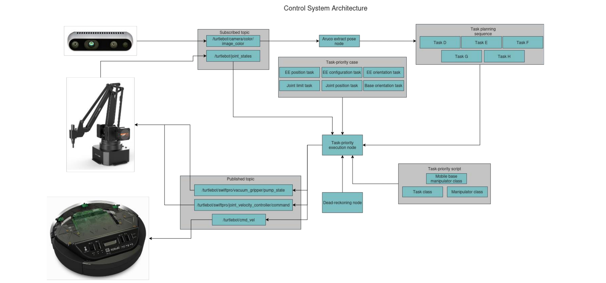
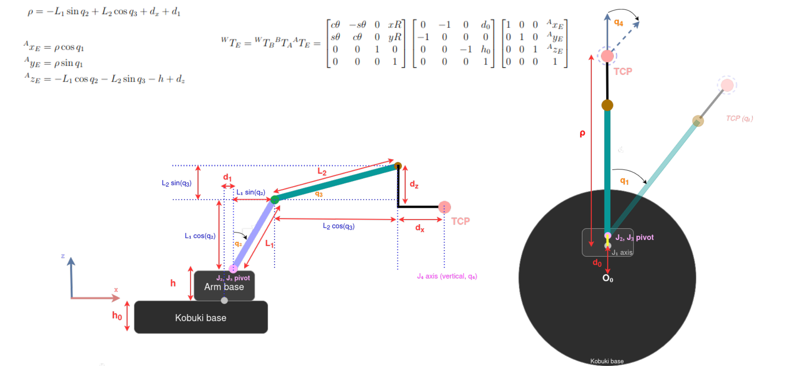
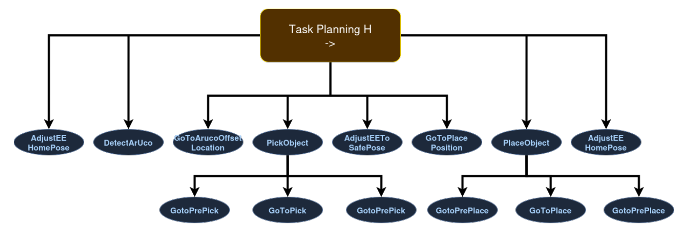
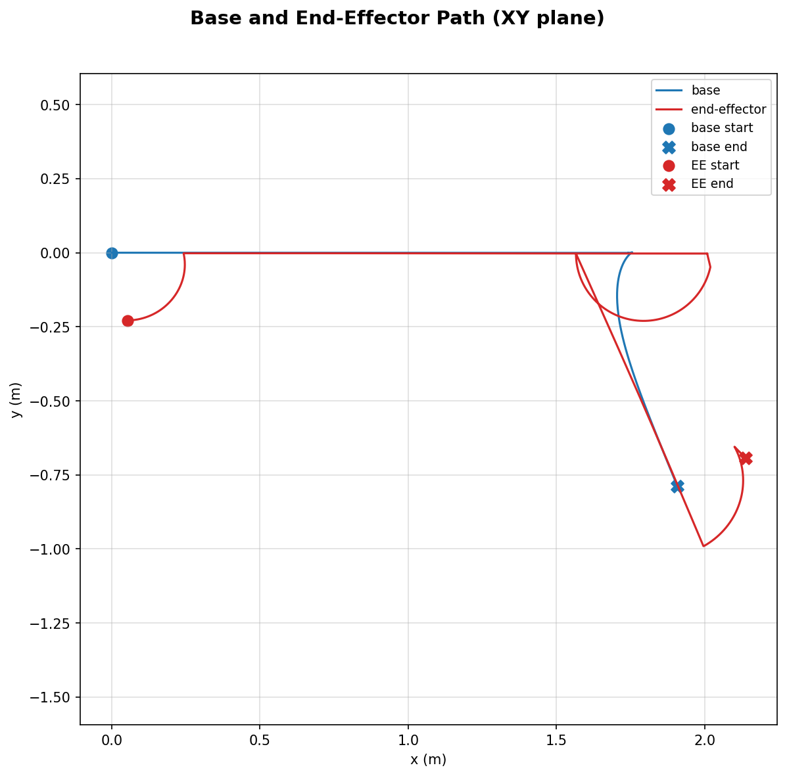
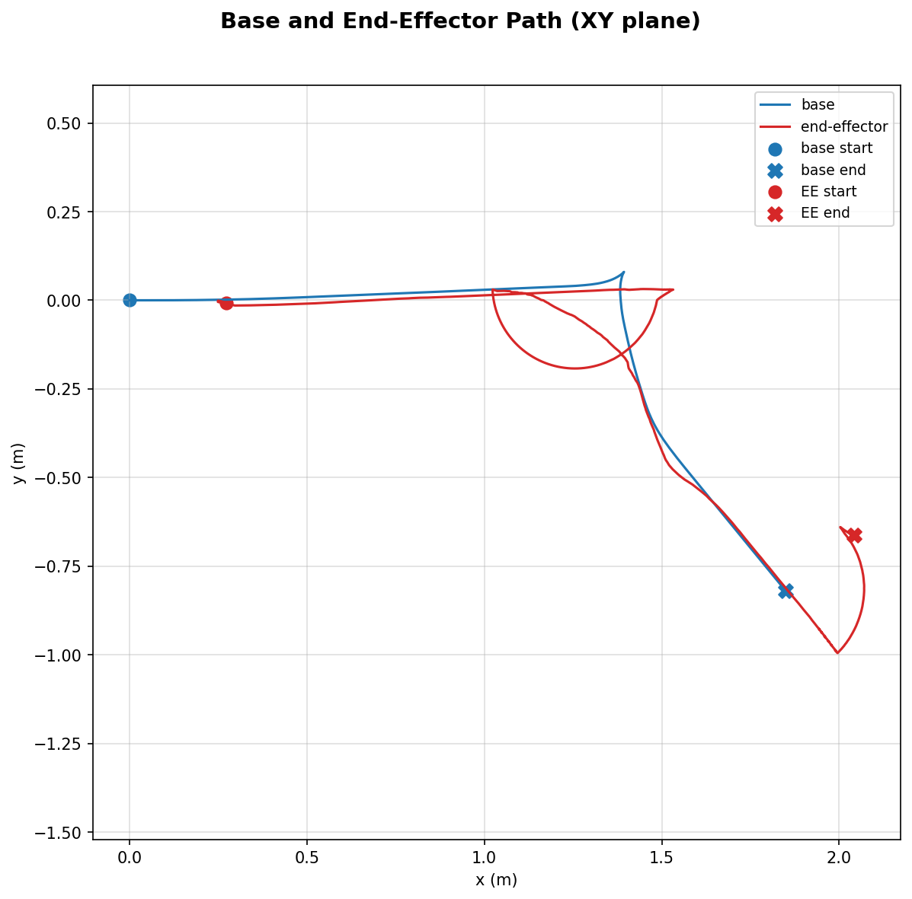
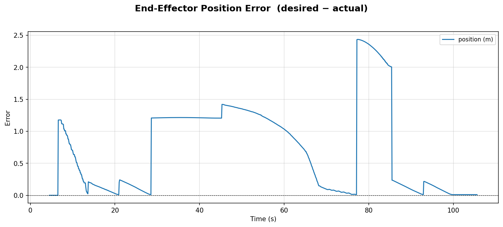
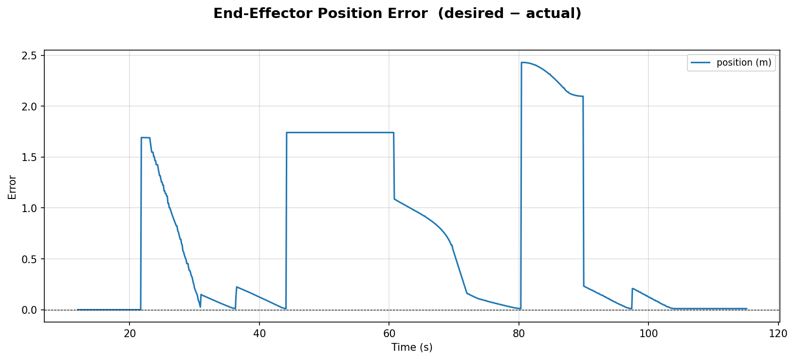
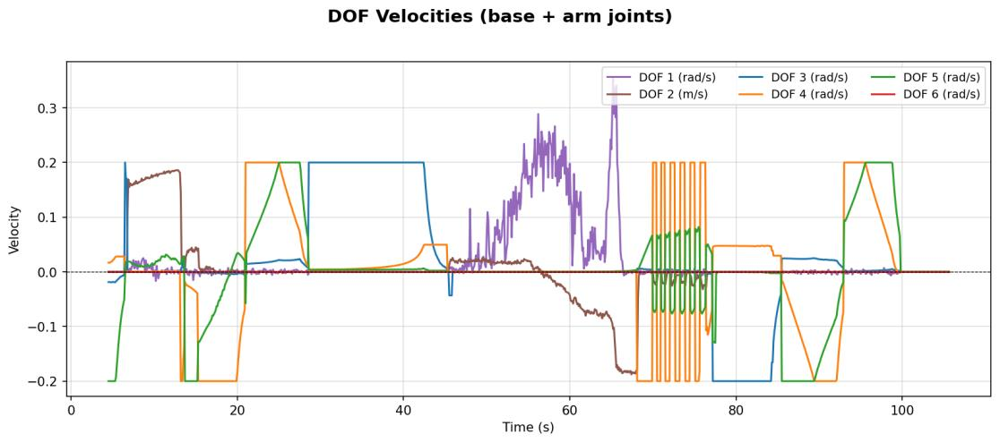
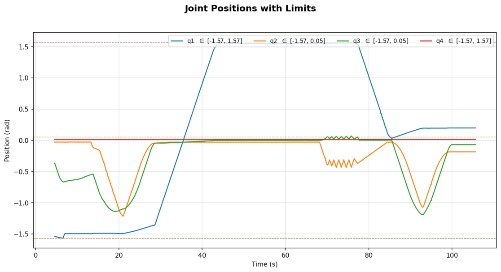

|
Hands-On Intervention · Universitat de Girona
Task-Priority Control for a Mobile Manipulator🦾 whole-body control and behavior trees for autonomous ArUco-guided pick and place This is my project within the Hands-On Intervention course at Universitat de Girona, done together with Elchin Aslanli. We built a ROS 2 framework for whole-body control of a mobile manipulator: a Kobuki (TurtleBot 2) base carrying a uFactory SwiftPro arm with a vacuum gripper. Some key points:
System Architecture and Kinematics  Task-Priority ControlEach task $i$ is solved in the null space of all higher-priority tasks: $$ \bar{J}_i = J_i P_{i-1},\qquad \dot{\zeta}_i = \dot{\zeta}_{i-1} + \bar{J}_i^{+}\left(a_i\, \dot{x}_i - J_i\dot{\zeta}_{i-1}\right),\qquad P_i = P_{i-1} - \bar{J}_i^{\dagger}\bar{J}_i $$Each pseudo-inverse is a weighted damped least-squares solution $\bar{J}^{+} = W^{-1}\bar{J}^{T}(\bar{J}W^{-1}\bar{J}^{T} + \lambda^{2}I)^{-1}$, and the weighting matrix $W$ switches at run time depending on how far the target is from the base. Joint limits are handled as inequality tasks at the top of the hierarchy, and if any DOF exceeds its velocity limit, the whole command is scaled down so the direction of motion is kept. Mission Planning with Behavior Trees
The mission is a memory-based sequence: home pose → detect ArUco → go to the object → pick →
safe pose → go to the place position → place → home pose. Each phase is a
Results      The full pick-and-place mission was completed both in simulation (about 115 s) and on the real robot (about 105 s). Next steps are recovery behaviors when the marker is lost or the grasp fails, hysteresis on the joint-limit activation to remove chattering, and a proper localization source to reduce odometry drift. |